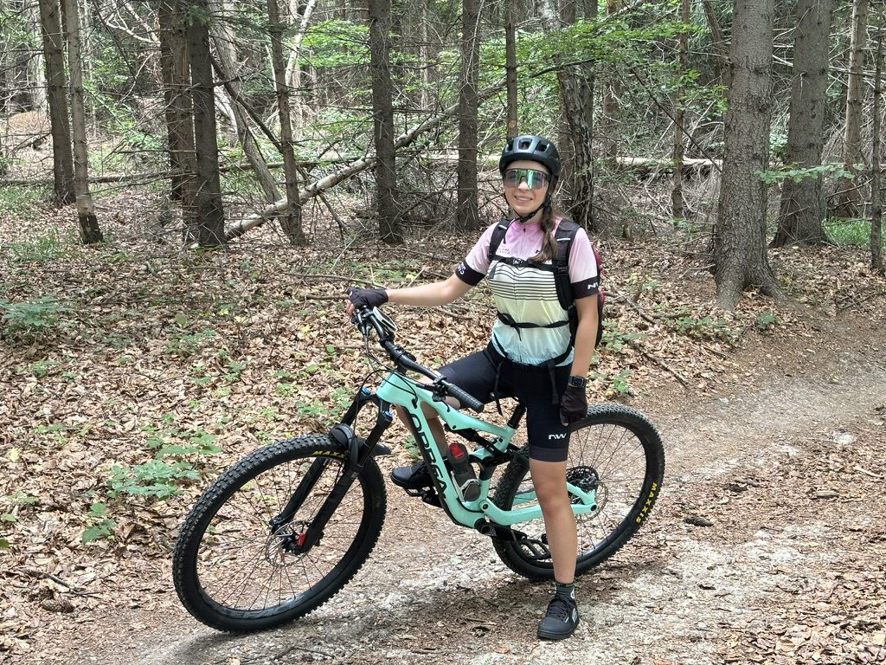
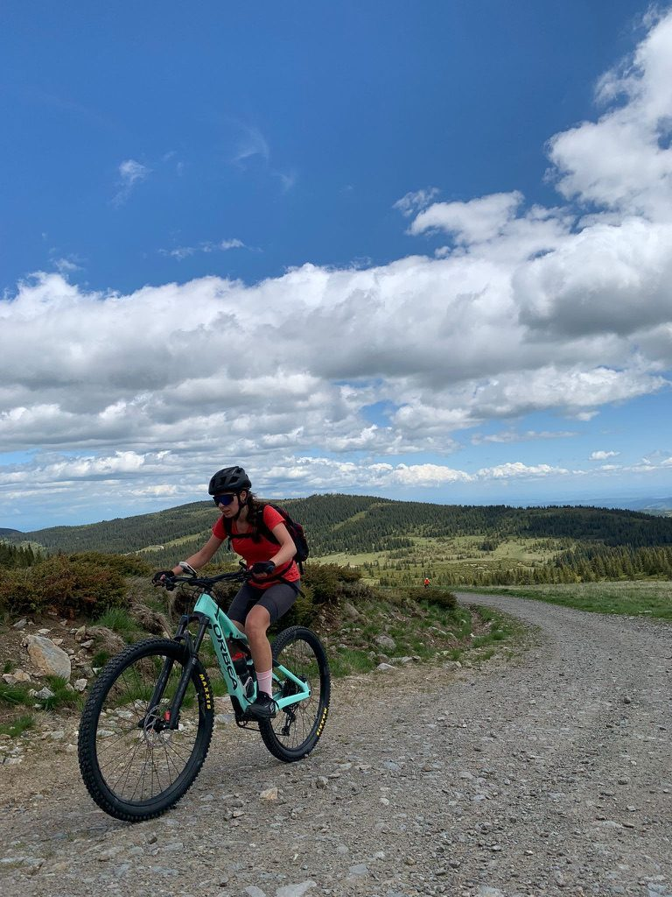
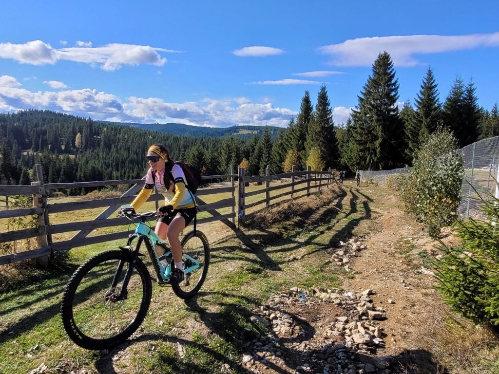
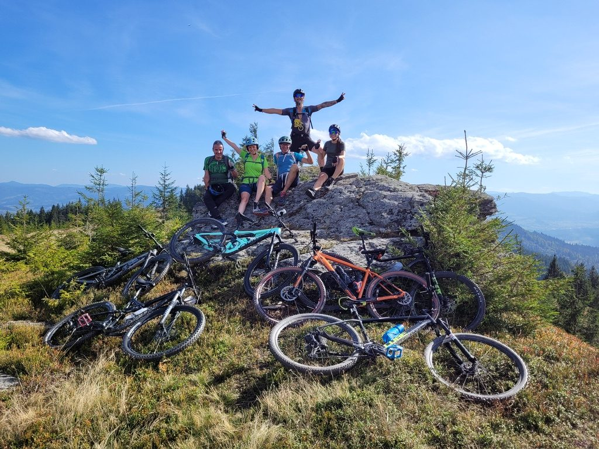
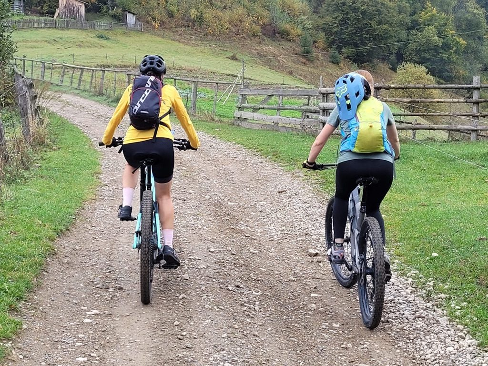

Cluj-Napoca sits at the edge of the Apuseni Mountains, which means that within 30 to 60 minutes of the city centre, you can be on trails that would not look out of place in any mountain biking guide to Romania. Forests, ridges, open meadows, river valleys. The variety is real.
I have been riding these trails long enough that they have stopped being new and started being familiar — which, with mountain bike trails, is when they actually become yours. You start to know where the trail gets loose, where the corners open up, which direction to take at the fork that isn't on any map.
Here are the ones I keep coming back to.
Faget forest — where it started

Faget. This meadow, this light, this bike.
Faget is a forest park on the edge of Cluj, and it's where a lot of local riders start. The trails are accessible, varied enough to keep you interested, and close enough to the city that an after-work ride is genuinely possible. The climbs are not punishing. The descents are satisfying rather than terrifying.

The day I realised what I was capable of. New world, unlocked.
I remember the first time I completed a route here that I'd been nervous about. The trail wasn't objectively hard — it was just more than I'd done before. And finishing it felt disproportionately good, the way any first time does. That's the gift of Faget for a newer rider: it keeps unlocking things.
Muntele Rece — when you want space

Muntele Rece. The sky is the main event.
Muntele Rece — "Cold Mountain" — is about 30 kilometres from Cluj and offers something different from Faget: openness. Long gravel roads on the ridgeline with panoramic views across the Apuseni. The kind of trail where you stop not because you need to rest but because the view demands it.
The climbs to get up there are sustained and require patience. But the reward is exactly the feeling in that photo — you on the ridge, the valley far below, the whole sky available to you.
Valea Ierii — underrated

Valea Ierii in autumn. The wooden fences are everywhere out here.
The Iara Valley is quieter and less known than the other spots on this list. The trails run through a mix of farmland and forest, past old wooden fences and occasional villages, with the kind of rural Romanian landscape that reminds you this country is still largely outside the tourist conversation.
It's a good ride for the days when you want to feel like you've found something rather than followed somewhere. Less infrastructure, more improvisation.
Finișel — for the summit photo

Finișel summit. Five bikes, five people who rode up here, one shared joke about the climb.
Finișel has a proper summit — a rocky outcrop with mountain views in every direction and the kind of exposed position that makes you feel like you actually climbed something. It's best done with a group, because the effort to get up there pairs well with someone to suffer next to, and the summit photo is better with more bikes in it.
Girls on trails

Two on the trail. It's different riding with other women.
I want to say something about riding with other women specifically, because it is genuinely different from mixed group rides. The pace negotiation is different. The encouragement is different. There's less of the subtle competitiveness that sometimes enters when it's mixed, and more of the "let's just actually enjoy this" energy that makes a ride feel like play rather than performance.
If you're a woman who rides near Cluj and wants company for any of these routes — message me. The Orbea always has a trail to recommend.
Flying in for these trails?
Cluj-Napoca has its own airport with regular connections from across Europe — handy if you're bringing a bike or just want to get straight to the trails. eSKY compares flights across airlines and routes, so you can find the connection that works for your dates.
Search Flights on eSKYThis is an affiliate link — if you book through it, I may earn a small commission at no extra cost to you.